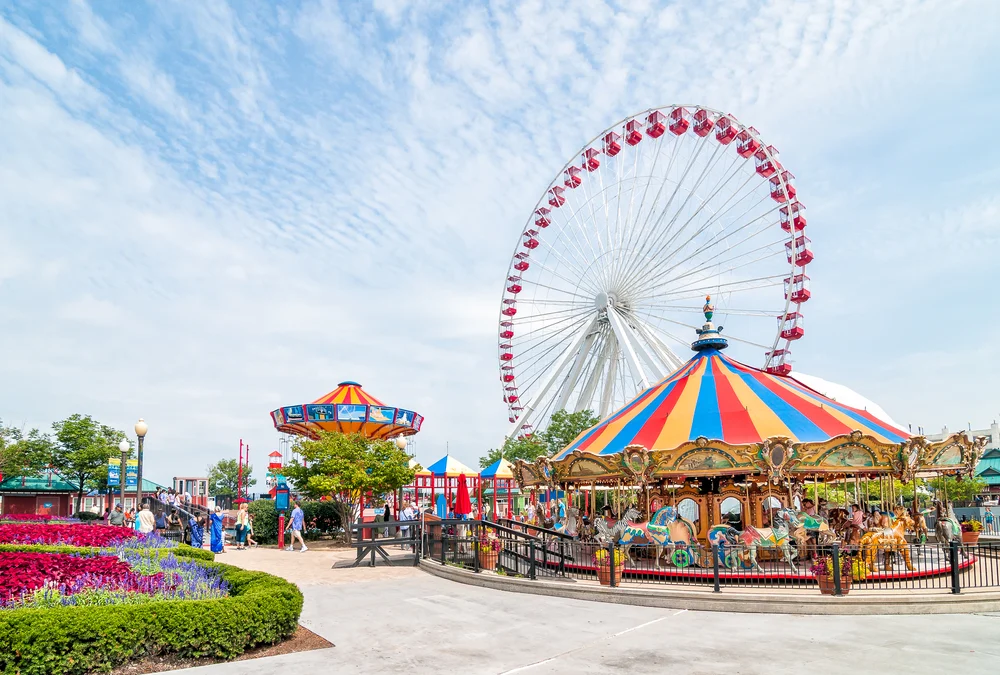
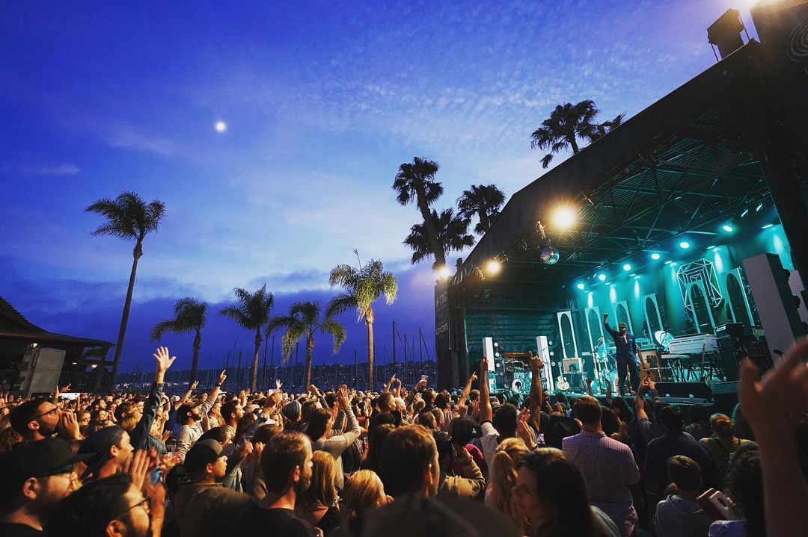
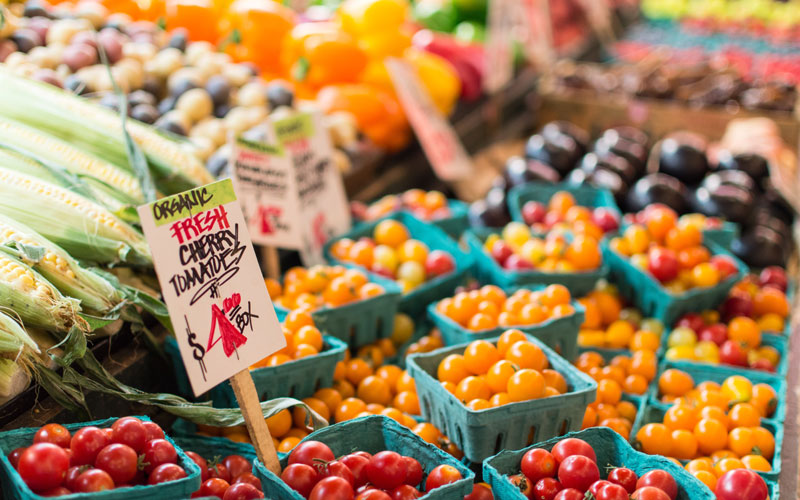
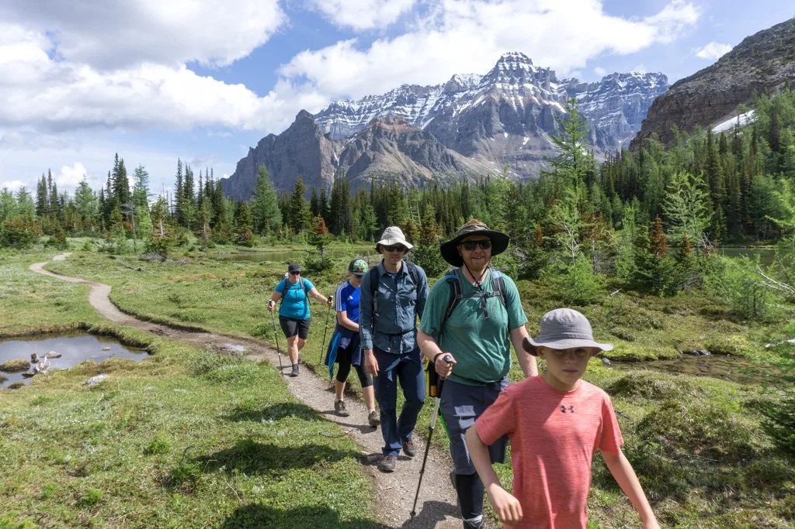
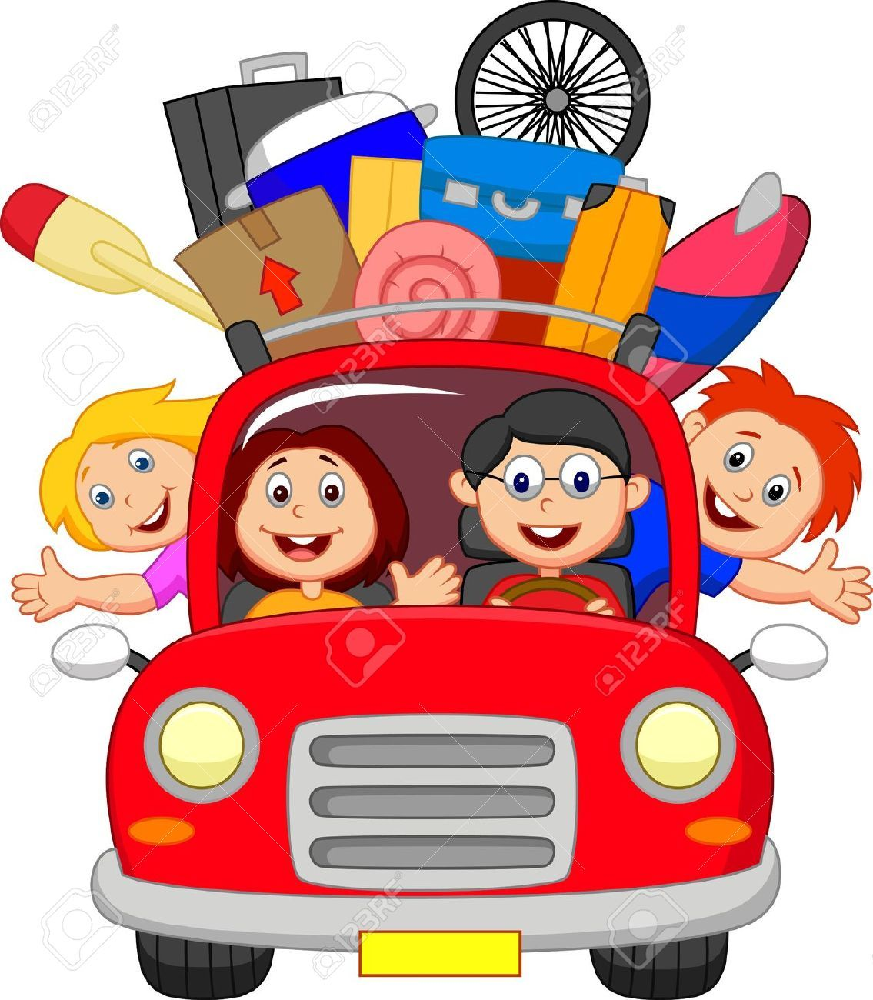
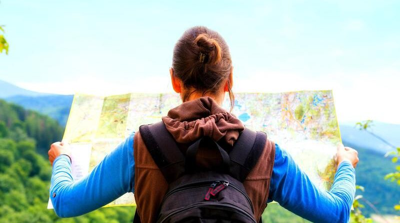

Skip to Main Content
Home
Destressing during the School Year
Destressing during the Summer
Ways to Destress During the Summer
These are just some things I do to destress!

Go to an Amusement Park
Go to the Beach

Go to a Concert

Go to a Farmers Market

Hike
Go to a lake

Visit family
See the sunrise

Travel Somewhere New